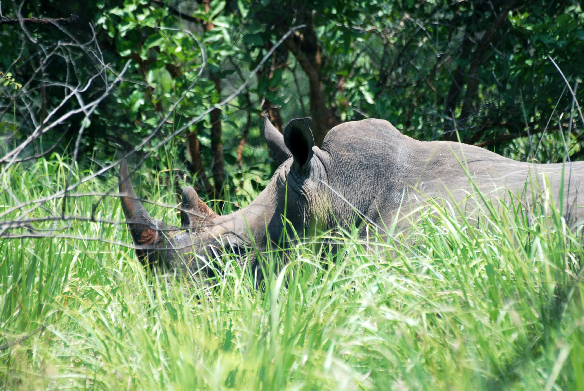

Ziwa changes the feeling of a wildlife encounter because you leave the vehicle behind. Walking through grass with a ranger, you become aware of wind direction, fresh tracks, and the strange tension of looking for something huge without the protection of metal around you. That sharpened awareness makes the sighting feel immediate before the rhino is even in view.
When the animal finally appears, the scale lands differently on foot. A rhino does not just look large. It looks heavy with presence, as though the landscape itself has stood up and started breathing. The encounter feels raw, but not reckless, because the tracking is structured by distance, discipline, and the calm confidence of the guides.
What deepens the visit even more is the sanctuary's larger meaning. Ziwa is not simply a place to see rhinos. It is a place that tells the story of return, of a species being carefully restored to Uganda after disappearance. That makes the experience emotional in a way many standard wildlife stops are not.
Why Walking Makes The Experience Stronger
On foot, details matter more. You notice the cracked ground, the height of the grass, the way everyone instinctively lowers their voice as the distance closes. The tracking becomes part fieldcraft, part suspense, and part lesson in how much more serious the natural world feels when you meet it at ground level.
This intimacy is what makes Ziwa memorable for travelers. It is not dramatic in the loud sense. It is dramatic because it is controlled, close, and full of quiet tension.
A Conservation Story You Can Feel
Many travelers care about conservation in the abstract. Ziwa makes it tangible. The sanctuary turns statistics into presence, showing what protection, patience, and planning can achieve over time. You are not reading about success. You are standing near it.
That is why Ziwa often leaves such a strong impression on the way to or from Murchison Falls. It adds moral weight to the route, reminding visitors that wildlife tourism is at its best when it helps species and habitats recover.
How To Use Ziwa Well In An Itinerary
Ziwa works beautifully as a breaking point on the road north. Instead of treating it as a quick stop, give it room. Let the tracking be its own experience, not just a box checked between departures and arrivals. Travelers who do that usually find the sanctuary more memorable than expected.
If your Uganda trip includes classic parks, Ziwa adds something they do not: the rare privilege of approaching one of Africa's great animals on foot while also witnessing a conservation story still being written.